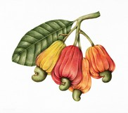

|  |
The cashew tree (Anacardium occidentale) is a tropical evergreen tree that produces the cashew seed and the cashew apple. The tree can grow as high as 14 m (46 ft), but the dwarf cashew, growing up to 6 m (20 ft), has proven more profitable, with earlier maturity and greater yields. The cashew seed is often considered a nut in the culinary sense; this cashew nut is eaten on its own, used in recipes, or processed into cashew cheese or cashew butter. Like the tree, the nut is often simply called a cashew. The species is native to Central America, the Caribbean Islands, and northern South America, including northeastern Brazil. Portuguese colonists in Brazil began exporting cashew nuts as early as the 1550s. In 2017, Vietnam, India, and Ivory Coast were the major producers. The shell of the cashew seed yields derivatives that can be used in many applications including lubricants, waterproofing, paints, and, starting in World War II, arms production. The cashew apple is a light reddish to yellow fruit, whose pulp can be processed into a sweet, astringent fruit drink or distilled into liquor. |